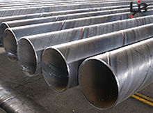

当前位置：沧州市螺旋钢管生产厂家 > 螺旋钢管厂家 >
Q235螺旋管此类钢的牌号| 螺旋管生产工艺
文章出处：admin 人气：发表时间：2017-09-12 22:52
Q235螺旋管属于碳素结构钢，主要原料为铁水加废钢，钢中硫、磷含量高于优质碳素结构钢，一般硫≤0.050%，磷≤0.045%。由原料带入钢中的其他合金元素含量，如铬、镍、铜一般不超过0.30%，按成分和性能要求，此类钢的牌号由Q195，Q215A、B，Q235A、B、C、D，Q255A、B，Q275等钢级表示。
注：“Q”是屈服的“屈”字的汉语拼音大写字头，其后数字为该牌号最小屈服点（σs）值，其后的符号是按照该钢杂质元素（硫、磷）含量由高到低并伴随碳、锰元素的变化而分为A、B、C、D四等。

Q235螺旋管
螺旋管生产工艺：是以带钢卷板为原材料,经常温挤压成型,以自动双丝双面埋弧焊工艺焊接而成的螺旋缝钢管.
螺旋钢管的特点：直缝焊管生产工艺简单，生产效率高，成本低，发展较快。螺旋焊管的强度一般比直缝焊管高，能用较窄的坯料生产管径较大的焊管，还可以用同样宽度的坯料生产管径不同的焊管。但是与相同长度的直缝管相比，焊缝长度增加30~100%，而且生产速度较低。因此，较小口径的焊管大都采用直缝焊，大口径焊管则大多采用螺旋焊
此文关键字：Q235螺旋管此类钢的牌号
推荐产品


相关产品
相关推荐
随机推荐
- 合肥螺旋管供应 合肥螺旋管厂 合肥螺旋钢管
- 螺旋钢管厂的微利亦导致经销商的微利和市场风
- 天津市万盛华业钢铁贸易有限公司 螺旋钢管
- 10月31日地质钻探用壁厚28的部标螺旋钢管行情陷
- 国标螺旋钢管厚度均匀性好，并具有抗裂性能
- 巴中螺旋钢管规格 巴中螺旋钢管批发 巴中螺旋钢
- 螺旋钢管价格落足点最终回到现货市场供需变化
- 12月11日苏州壁厚90的镀锌螺旋钢管密度是多少
- 大口径螺旋钢管价格，退磁的几种方法
- 节前螺旋管厂有意识控制产能，年后为商家减轻
- 12月18日化肥用壁厚70的X42高频焊螺旋钢管价格最
- 原材料与螺旋钢管价格的双向传导机制能否顺畅
- 螺旋管厂、螺旋钢管价格，钢渣的处理方式
- 郑州哪有螺旋钢管 郑州螺旋管采购 郑州螺旋管理
- 船舶用外径426的GB/T3640-88电力螺旋钢管多少钱一根
- 连云港1月17日中钢联产外径325的Q235A直缝螺旋钢管
- 厚壁螺旋焊管现货市场莱芜今日价格
- 近期国内螺旋钢管价格在原料市场不断上涨
- 去库存意愿较强，螺旋钢管厂家代理制逐步消亡
- 德宏化肥用SY5038-83流体输送用螺旋钢管量大优惠
- 螺旋钢管价格行情 螺旋钢管与直缝钢管的比
- 淮北2月16日石油裂化用外径146的GB/T3640-88热镀锌螺
- 螺旋钢管现货释放 钢价不会单边牛市
- 汽车半轴套管用16Mn厚壁螺旋钢管行情上涨冲力较
- 价格处于下行通道，螺旋钢管市场并不看好
- 天津最新螺旋管价格表
- 螺旋钢管价格|防腐螺旋钢管执行标准
- 螺旋管厂螺旋钢管价格|表面处理方法
- 螺旋钢管价\格详细介绍大口径螺旋钢管的有关知
- 螺旋钢管钢铁产业要高度关注经济发展和环境要
重点推荐
- 螺旋管厂在制作螺旋焊管过程中,需要主意的问题
- 波段和趋势共振对螺旋钢管价格有不可预计的推
- 广东Q345b螺旋管 广东X42螺旋管 广东16锰螺旋钢管
- 天津螺旋钢管市场价格小幅下降20元
- 不同板厚及不同环境温度下16Mn钢的预热温度
- 螺旋管厂、螺旋钢管价格交货技术条件
- 沈阳购买螺旋钢管 沈阳螺旋钢管生产工艺 沈阳螺
- 云南螺旋钢管图片 云南排水用螺旋钢管 云南螺旋
- 安庆购买螺旋钢管 安庆螺旋钢管生产工艺 安庆螺
- 天津螺旋管厂-节能减排效力显现
- 南昌生产钢管 南昌钢管壁厚标准 南昌钢
- 外贸16锰钢管 外贸Q235A螺 外贸L245钢管
- 大庆Q235A螺旋管 大庆q345c螺旋钢管 大庆Q345b螺旋管
- Q235B螺旋管生产工艺Q235B螺旋管的特点
- 螺旋钢管按用途分为
- 成都保温螺旋钢管 成都16锰螺旋钢管 成都
- 螺旋管的外径,内径,相邻螺旋间距约为多少算标准
- 黄冈GB/T9711螺旋管 黄冈螺旋钢管市场 黄冈l360螺旋
- 什么是螺旋缝钢管|Q235螺旋钢管工艺流程
- “2012世界末日”之后能否也让螺旋钢管劫难重生